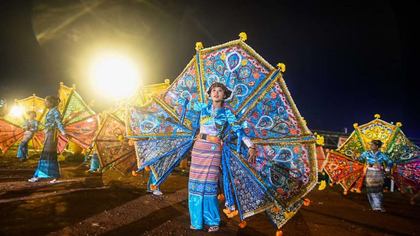

By celebrating hot air balloon festival, we can attract more tourists by unique way which only our country owns. By paying homage to elders, we can show our respect to our parents, grandparents and teachers. As a result of doing ka htein khin activity, we can maintain our cultural heritage. By celebrating "kyimano pwe", relationship between young people can be better. Last and the least, children and employees can have more holidays and can take a rest at those days and can even participate in celebrating Tazaungdaing festival.
The disadvantage is that the hot air balloon can accidentally catch fire and cause damage to homes and can even kill a person as a worst situation. Therefore, the balloon should be launched carefully in the field away from residential areas. As there are many people who come to Taunggyi Tazaungdaing Festival each year so it’s so dangerous for people to go near the hot air balloons but they approach near that again and again so all people should avoid that in order to be safe. And by accepting all rules, we can celebrate a safer Tazaungdaing Festival.